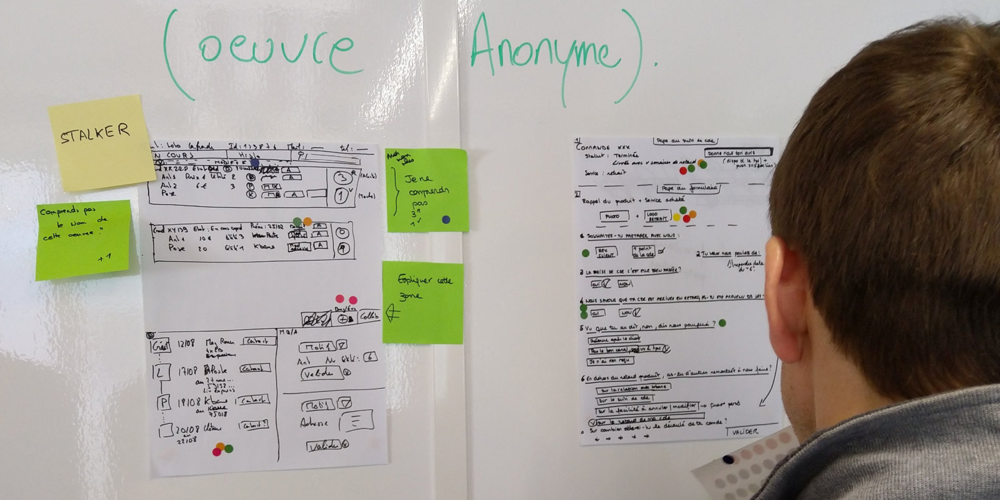
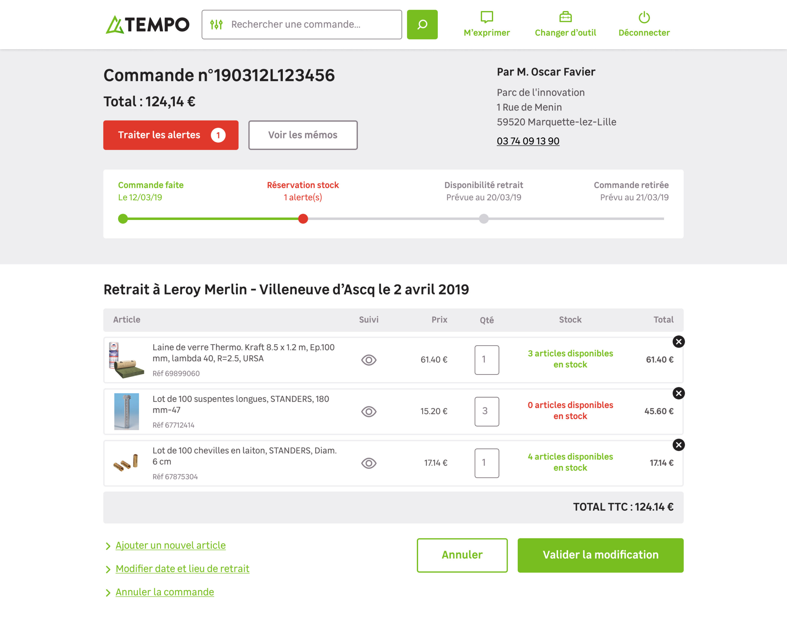
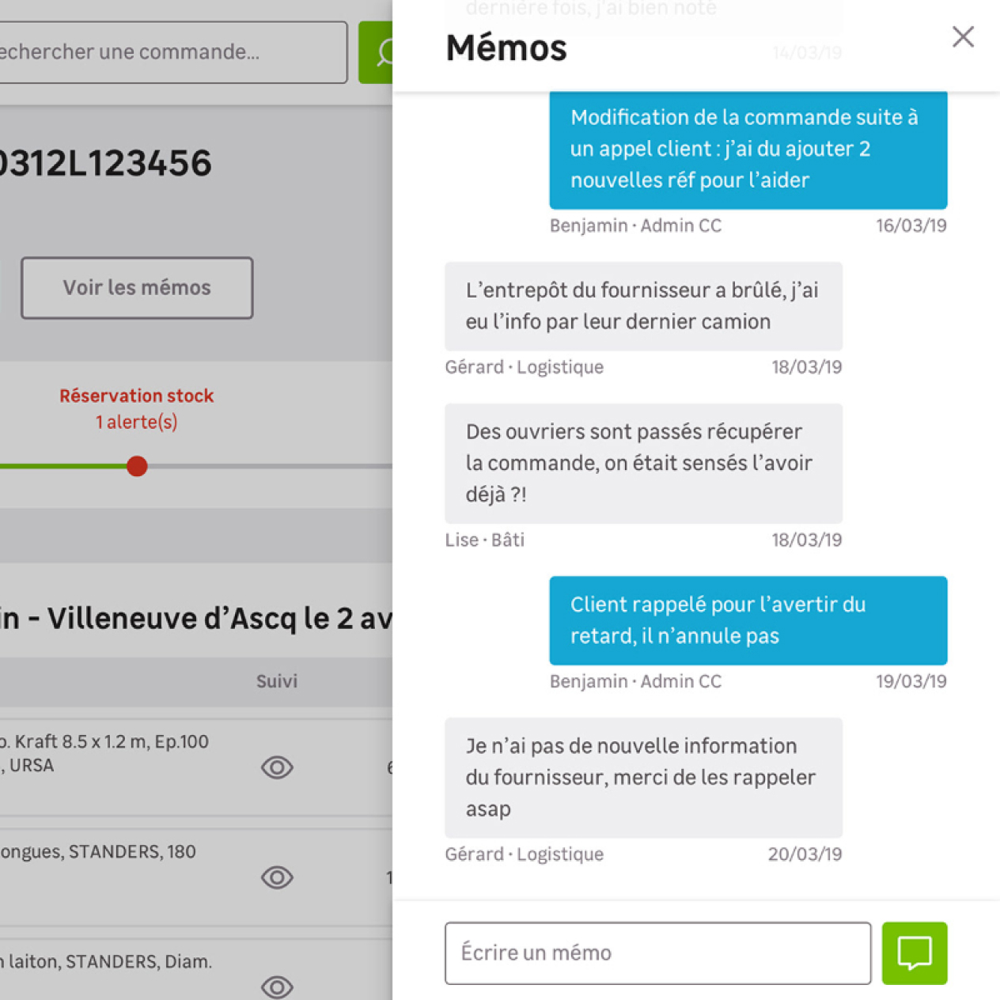
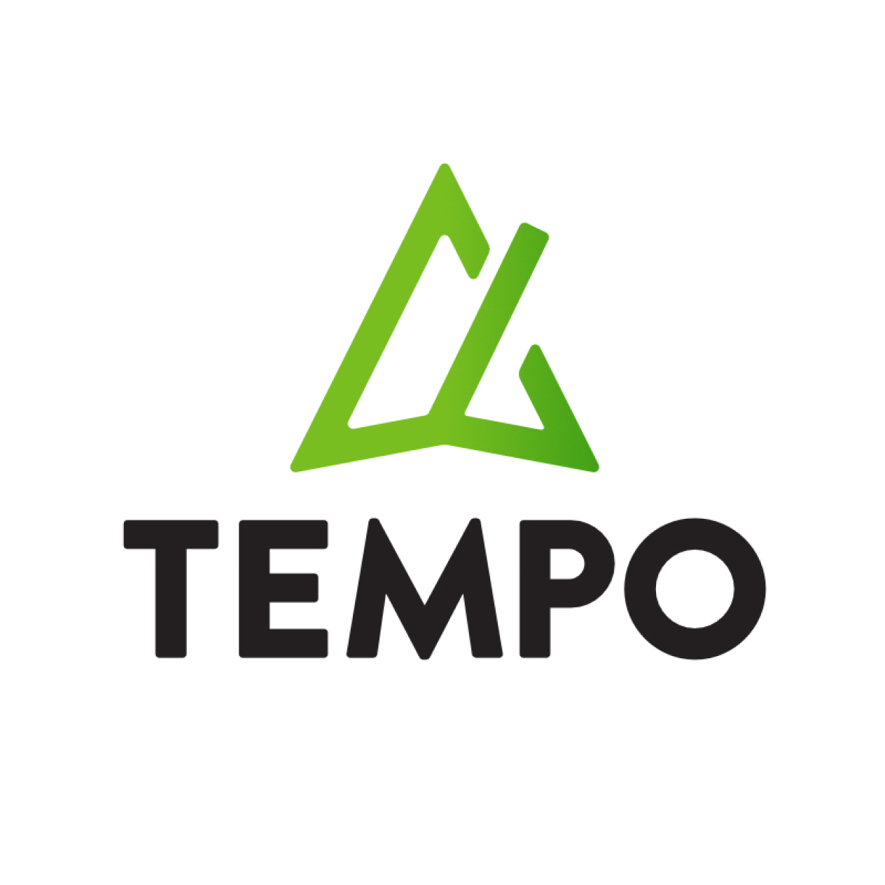

Leroy Merlin

- User Research
- UX/UI design
Make order tracking more readable for employees, and help them keep the promise made to the customer.
How to manage the follow-up of an order from start to finish, whether the customer goes through the web or through any Leroy Merlin store (and this at any time during the experience)? How can solutions be provided to employees in the event of problems with this order, to provide a clear and rapid response to the customer? How to build a tool in good coherence with the new design system of the company?
From interviews to design sprints, from wireframes to user tests, to faithful models based on a design system shared with the developers... it is to all these questions that we have sought to answer.



